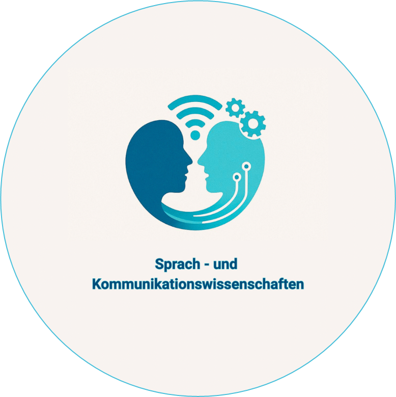
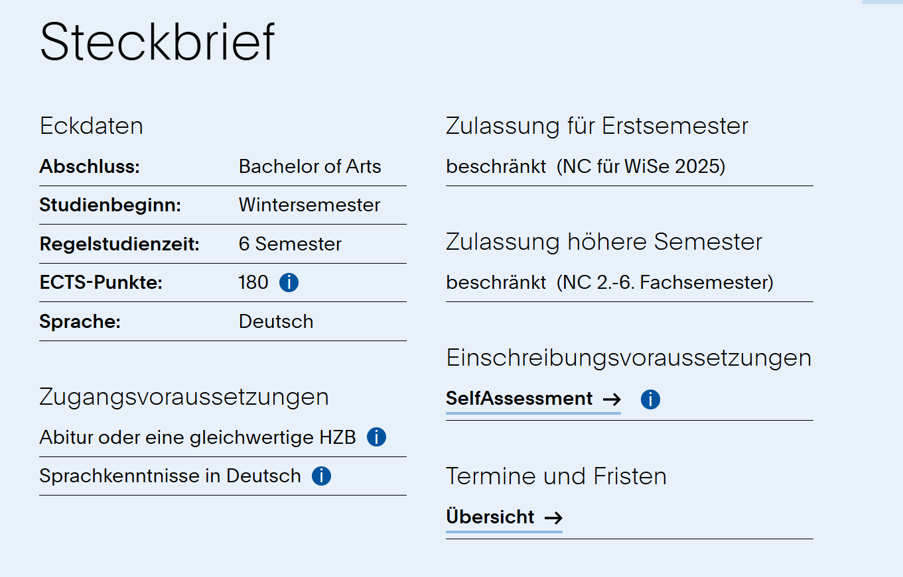
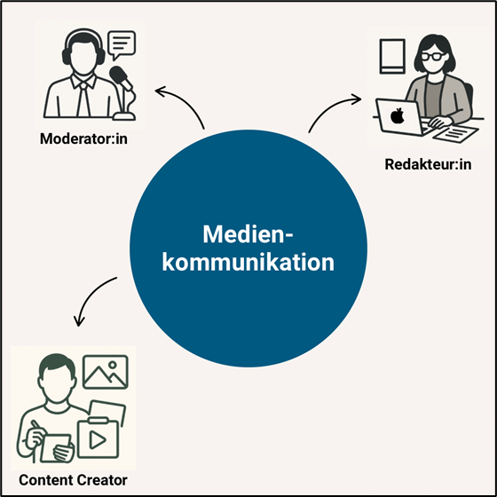
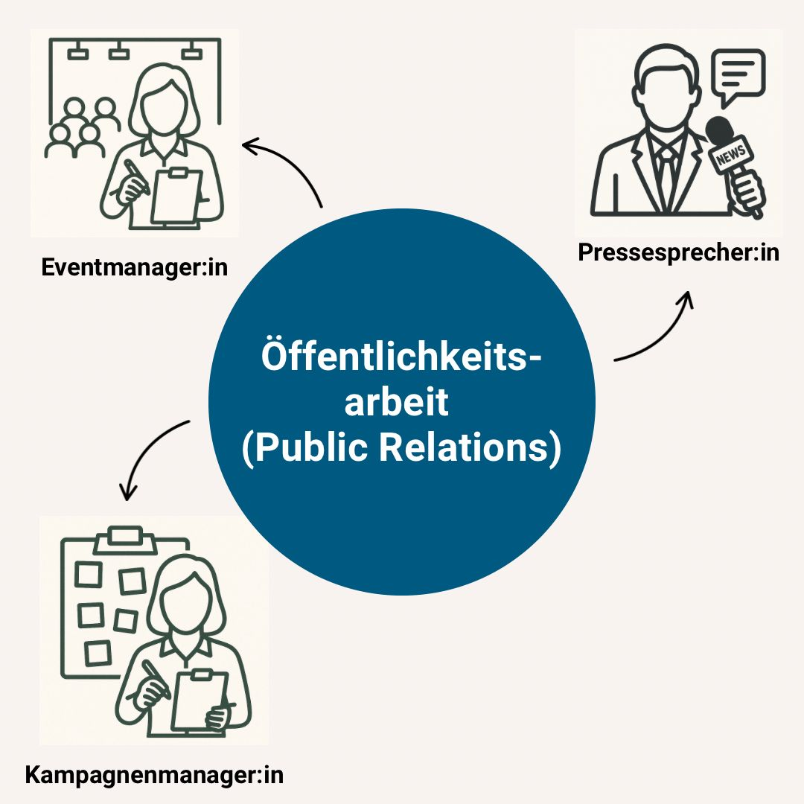

Hinweis: Stelle sicher, dass die Datei steckbrief-geschnitten.png im Repository liegt.
Sprache begegnet uns überall – im Gespräch mit Freund*innen, beim Schreiben von Nachrichten, im Netz oder im beruflichen Kontext. Wir sprechen, schreiben, lesen und hören – ganz selbstverständlich und doch hochkomplex. Die Sprach- und Kommunikationswissenschaft beschäftigt sich genau damit: mit den Formen, Funktionen und Wirkungen von Sprache im Alltag.
Der Studiengang Sprach- und Kommunikationswissenschaft an der RWTH Aachen verbindet diese Grundlagen mit aktuellen Fragen der digitalen Kommunikation. Wie verändert sich Kommunikation in sozialen Medien? Wie funktioniert Mensch-Maschinen-Interaktion? Und wie lassen sich solche Prozesse analysieren und gestalten? Genau das lernst du hier – theoretisch fundiert und praxisnah.
| Semester | Studieninhalte |
|---|---|
| 1–2 |
Einführung in die Sprachwissenschaft, Einführung in die Kommunikationswissenschaft Mündliche Kommunikation: Rede- und Gesprächsrhetorik, Sprechwissenschaft Handeln mit Sprache I: Grammatik, Phonetik/Phonologie Propädeutik des wissenschaftlichen Arbeitens, Interdisziplinäre Studieneinheit, Fremdsprache |
| 3–4 |
Handeln mit Sprache II: Semantik und Pragmatik Methoden der Sprach- und Kommunikationswissenschaft Handeln mit Medien: Kommunikation und Interaktion Praxis-, Wahlpflicht- und Mobilitätsfenster: - Praktikum oder Auslandsprogramm - Wahlpflichtbereich – Lehrveranstaltungen aus anderen Fachbereichen – oder Auslandsprogramm |
| 5–6 |
Handeln mit Texten: Textlinguistik Mündliche Kommunikation: - Kommunikationspraxis Mündlichkeit - Didaktik und Methodik der rhetorischen Kommunikationsvermittlung Berufliche Anwendungsfelder: - Medizinethische Problemfelder in medialem Diskurs und öffentlicher Wahrnehmung - Techniksoziologie oder Soziologische Systeme - Sprache und Kognition oder Geschichte der Technikkultur Forschungsmodul: - Forschungskolloquium, Forschungskonferenz zur Bachelorarbeit, Bachelorarbeit |

